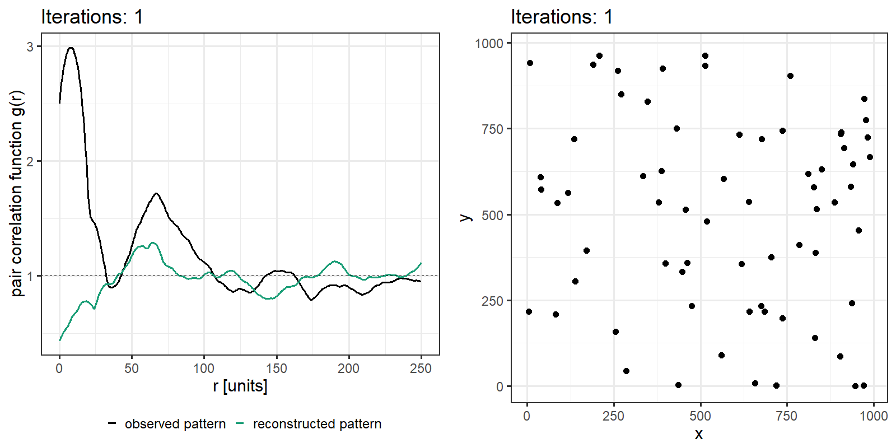

Background
Maximilian H.K. Hesselbarth
2024-02-14
Source:vignettes/articles/background.Rmd
background.RmdSpecies-habitat associations are present if species are specialized to small-scale environmental conditions (Tilman & Pacala, 1993) and are more common within suitable habitats (Comita et al., 2007; Harms et al., 2001). Following, species-habitat associations show the importance of abiotic processes on the spatial patterning of plant populations (Garzon-Lopez et al., 2014).
There are mainly two methods that can be found in the literature to
analyse such small-scale species-habitat associations, namely the
gamma-test (Plotkin et al., 2000) and the torus-translation test (Harms
et al., 2001). Both methods require data on the locations of plants (as
spatstat::ppp point pattern) and on the environmental
conditions (classified into discrete habitats as
terra::rast). To show significance species-habitat
associations, both methods randomize one of the components. Because the
locations of plants as well as the habitats are most likely
auto-correlated, the spatial structure must be kept while randomizing
the data (Wiegand & Moloney, 2014).
All methods compare the abundance within a habitat between the observed data and the randomized null model data. If the count is below or above a pre-set threshold (e.g. the 2.5th and 97.5th quantiles), negative or positive associations, respectively, are present.

Randomize environmental data
The following two methods randomize the environmental data, i.e. the SpatRaster data, while keeping the point pattern data fixed.
Torus-translation-test
The torus-translation test (Harms et al. 2001) shifts the habitat map
in all four cardinal directions around a torus. This is only possible
for square rasters. To use this method in shar use
translate_raster().
Randomized-habitats procedure
The randomized-habitats procedure (Harms et al. 2001) is also
possible for non-square raster and randomizes the habitats using a
random-walk algorithm. To use this method in shar use
randomize_raster().

Randomize point pattern data
Contrastingly to the two methods described above, the following two methods randomize the point pattern data, while keeping the environmental data fixed.

Gamma-test
The gamma-test (Plotkin et al. 2000) randomizes the data by fitting a
point process model to the observed data and simulation n random point
patterns using the fitted point process model. However, the method only
works for point patterns that can be described by a theoretical point
process model. To use this method in shar use
fit_point_process().
Pattern reconstruction
Pattern reconstruction (Tscheschel & Stoyan 2006) randomizes the
point pattern using simulated annealing (Kirkpatrick et al. 1983). This
allows to randomize also complex point patterns without a theoretical
point process model. To use this method in shar use
reconstruct_pattern().

References
Comita, L.S., Condit, R., Hubbell, S.P., 2007. Developmental changes in habitat associations of tropical trees. Journal of Ecology 95, 482–492. https://doi.org/10.1111/j.1365-2745.2007.01229.x
Garzon-Lopez, C.X., Jansen, P.A., Bohlman, S.A., Ordonez, A., Olff, H., 2014. Effects of sampling scale on patterns of habitat association in tropical trees. Journal of Vegetation Science 25, 349–362. https://doi.org/10.1111/jvs.12090
Harms, K.E., Condit, R., Hubbell, S.P., Foster, R.B., 2001. Habitat associations of trees and shrubs in a 50-ha neotropical forest plot. Journal of Ecology 89, 947–959. https://doi.org/10.1111/j.1365-2745.2001.00615.x
Kirkpatrick, S., Gelatt, C.D.Jr., Vecchi, M.P., 1983. Optimization by simulated annealing. Science 220, 671–680. https://doi.org/10.1126/science.220.4598.671
Plotkin, J.B., Potts, M.D., Leslie, N., Manokaran, N., LaFrankie, J.V., Ashton, P.S., 2000. Species-area curves, spatial aggregation, and habitat specialization in tropical forests. Journal of Theoretical Biology 207, 81–99. https://doi.org/10.1006/jtbi.2000.2158
Tilman, D., Pacala, S.W., 1993. The maintenance of species richness in plant communities, in: Ricklefs, R.E., Schluter, D. (Eds.), Species Diversity in Ecological Communities. University of Chicago Press, Chicago, pp. 13–25. ISBN 978-0-226-71823-1
Tscheschel, A., Stoyan, D., 2006. Statistical reconstruction of random point patterns. Computational Statistics and Data Analysis 51, 859–871. https://doi.org/10.1016/j.csda.2005.09.007
Wiegand, T., Moloney, K.A., 2014. Handbook of spatial point-pattern analysis in ecology. Chapman and Hall/CRC Press, Boca Raton. ISBN 978-1-4200-8254-8